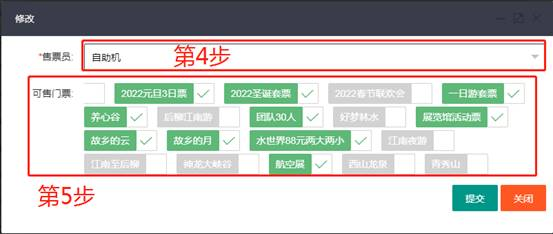
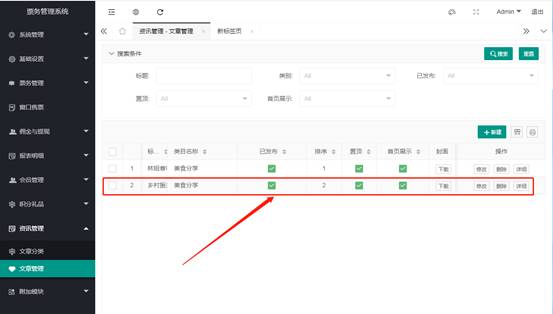
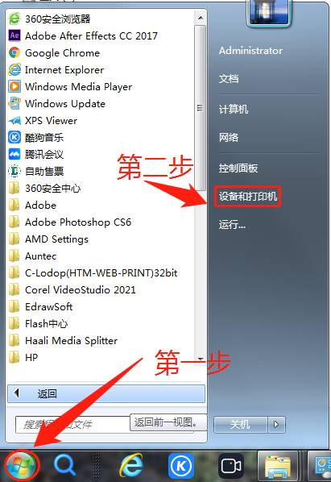

Self-service Machine (SSM) Configuration and User Guide
The Self-service Machine (SSM) is an important offline ticket sales channel in the smart ticketing system, which can effectively divert the ticket purchase crowd during peak periods and save labor costs. Currently, the self-service machine supports various convenient functions such as scan code payment and ID card ticket purchase.
1. First-time Use Settings (Local Operation)
Important: A new or reset self-service machine must first be set with the correct backend server address, otherwise it cannot connect to the ticketing system and cannot sell tickets normally.
On the home page of the self-service machine software, click the "Management/Settings Page" button in the lower right corner. The page may be inconsistent with the example picture due to different versions, which does not affect the use

In the pop-up numeric keypad, enter the administrator password
82112711and click "OK".
After entering the settings page, in the "Server Address" column, enter your backend server IP address or domain name, and then click "Save".

2. Backend Parameter Configuration
After completing the local settings of the self-service machine, you also need to configure related parameters in the backend of the ticketing system.
1. Basic Parameter Settings
Log in to the backend of the ticketing system, find the device management page of the corresponding self-service machine, and configure the basic parameters.


2. Sellable Ticket Settings
This setting determines which tickets can be sold on this self-service machine.
- In the backend management system, navigate to Ticket Management -> Ticket Sales Settings.
- Find the "Self-service Machine" sales channel and click "Modify".

- In the pop-up window, check all the tickets you want to sell on this self-service machine, and then save. 
3. Screen Content Settings (Information Carousel)
This function is used to set the carousel advertising images or information content on the home page of the self-service machine.
Create information content:
- In the backend, navigate to Information Management -> Article Management and click "New".
- Fill in the article title, select a category, and upload a cover image and content images.

- After completion, it is recommended to "pin" the article for easy selection later. 
Associate information with the self-service machine:
- Go back to the "Parameter Settings" page of the self-service machine.
- In the "Display Information" or similar option, select the newly created article or image.

- Submit and save the settings.
Final effect: The home page of the self-service machine will display the information content you set in a carousel.

3. Hardware Configuration
Ticket Printer Settings (Taking Lineng Printer as an example)
The following steps are the general process for setting up a ticket printer in the Windows system.
Open "Devices and Printers" in Windows. 
Right-click in the blank space of the window and select "Printer server properties".

In the "Forms" tab, check "Create a new form", set a new specification according to the actual size of your ticket paper (such as 80mm * 120mm), and save the form.

Right-click your printer icon and select "Printing preferences".

In "Page Setup", select the paper specification you just created.

Right-click the printer icon and select "Printer properties".

In the "Device Settings" tab, also set the "Paper source" and other options to the new specification you created, and then save.

After completing all the above settings, print a test page to check whether the ticket can be printed correctly according to the preset specifications.